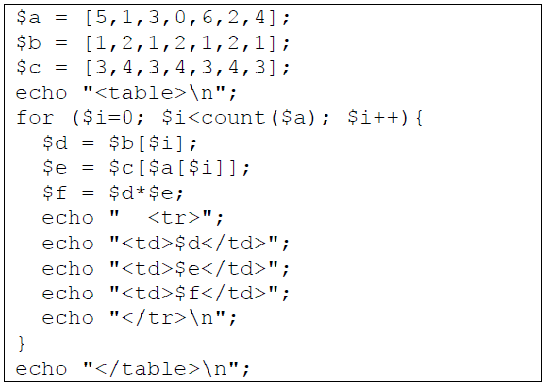

Partie n°1 : Questions de cours (5 points -15mn)
Barème : 3 points – 2 point
Partie 2: Probleme (30mn)
Bareme : 5 points
Quels outils PHP utiliseriez-vous et comment ?
- Vous ne devez pas resoudre les problemes algorithmiques, mais bien expliquer tout ce à quoi il faut penser.
Votre explication doit etre complete et concise : Elle doit etre plus courte que cette consigne ! Pas de grosse redaction, soyez synthetique.
Partie3: Interprétation d’un code PHP (15 mn)
Bareme : 3points + 2points
Barème : 3 points – 2 point
COMMANDES LINUX
Vous recevez un fichier .zip qui contient les fichiers d’un site Web à mettre en ligne sur un serveur qui tourne sous Linux.- Quelle commande permet d’extraire l’archive ?
- Quelle commande permet d’envoyer les fichiers sur le serveur ?
- Quelle commande permet d’affecter les droits aux fichiers de facon que le navigateur affiche correctement le site ?
SOLUTION 1.1
-
zip -r fichier.zip dossierDest
scp fichierSource utilisateur@serveur:dossierDestchmod -R a+rx Dossier
Que -ce l'architecture client serveur ?
Le web se fonde sur une architecture client/serveur élémentaire ;
en résumé :
- Un client (généralement un navigateur Web) envoie une requête à un serveur (le plus souvent un serveur web comme Apache, Nginx, IIS, Tomcat...), en utilisant le protocole HTTP.
- Le serveur répond à la requête en utilisant le même protocole.
VARIABLE SUPERGOLBALE
- A quoi servent les variables $_POST et $_SESSION ?
- Dans quel cas s’utilisent-elles ? ... ?!
- Quelles sont leurs points communs et leurs differences? ?!
SOLUTION 1.2
-
UTILITÉ
$_POST[]: Contient les infos qui viennent d'être envoyées par un formulaire . C'est une methode d'envoie de donnees au script PHP
$_SESSION[]: Contient des variables qui restent stockées sur le serveur le temps de la présence d'un visiteur
-
USAGE
$_POST[] : Utilisé dans le traitement PHP d'un formulaire
$_SESSION[]: Utilisé pour le passage de variables entre les pages
-
COMPARAISON
Leurs points communs?
-
Elles font partie des variables superglobales de PHP
-
Elles fournissent des variables au script PHP
-
Ce sont donc des mecanismes d'entree
Leurs differences?
- $_POST[] Récupere seulement les variables passées par un formulairePOST
- $_SESSION[] Récupere toutes les variables de session
À quoi sert $_REQUEST[ ] ?
$_REQUEST fait partie des variables superglobales de PHP.Pourquoi ne pas utiliser cette superglobale ?
Elle permet de récupérer des variables fournies au script par n'importe quel mécanisme d'entrée.
Elle peut donc remplacer $_POST, $_GET, $_ENV, $_COOKIE, et $_SESSION.
Cependant les données sont récupérées selon un certain ordre, celui prédéfini par la directive php.ini, vous pouvez par exemple avoir ceci:
variables_order = "EGPCS"avec:
Dans ce cas les données seront traitées dans cette ordre:
- E pour les variables d'Environnement
- G pour les variables provenant de la méthode GET
- P pour les variables provenant de la méthode POST
- C pour les variables provenant d'un Cookie
- S pour les variables de Session
Il vous est bien sûr possible de changer l'ordre comme vous le souhaitez, mais ce n'est à mon sens pas ce qu'il y a de mieux à faire.
- variable d'Environnement
- variables GET
- variables POST
- Cookies
- variables de Sessions
Tout simplement à cause de l'ordre des variables cité ci-dessus.
Partie 2: Probleme (30mn)
Bareme : 5 points
CONCEPTION D'UN JEU DE BATAILLE NAVALE
La page Web affiche une grille qui contient 10 lignes et 10 colonnes.
Des bateaux sont places aleatoirement sur cette grille( Ces bateaux sont cachés à l’utilisateur).
Au debut du jeu, la grille affiche des "# " pour symboliser la mer.
- Un bateau peut occuper une case, ou d2 cases adjacentes, ou 3 cases adjacentes.
- Le joueur doit retrouver la position des bateaux en faisant des propositions.
Pour cela,
- Il doit indiquer les cases (les unes après les autres) où il pense qu’un bateau se cache.
- Les lignes sont identifiees par des lettres.
- Les colonnes sont identifiees par des chiffres.
Par exemple,
s’il veut indiquer la case qui se trouve à la deuxieme ligne(B) et la troisieme colonne(3):
il saisit B3 dans un champ de saisie d’un formulaire et clique sur le bouton " Proposer ! "
pour valider sa proposition.
Le jeu est gagné lorsque le joueur a trouvé tous les bateaux.
Des bateaux sont places aleatoirement sur cette grille( Ces bateaux sont cachés à l’utilisateur).
Au debut du jeu, la grille affiche des "# " pour symboliser la mer.
- Un bateau peut occuper une case, ou d2 cases adjacentes, ou 3 cases adjacentes.
- Le joueur doit retrouver la position des bateaux en faisant des propositions.
Pour cela,
- Il doit indiquer les cases (les unes après les autres) où il pense qu’un bateau se cache.
- Les lignes sont identifiees par des lettres.
- Les colonnes sont identifiees par des chiffres.
Par exemple,
s’il veut indiquer la case qui se trouve à la deuxieme ligne(B) et la troisieme colonne(3):
il saisit B3 dans un champ de saisie d’un formulaire et clique sur le bouton " Proposer ! "
pour valider sa proposition.
Le jeu est gagné lorsque le joueur a trouvé tous les bateaux.
A chaque proposition, le navigateur peut afficher :
-
"Raté !" si la case ne contient pas de bateau:
dans ce cas, la case prend la valeur " - " pour indiquer qu’il n’y a pas de bateau, -
"Touché !" pour indiquer que la case contient un bateau
mais que le bateau n’a pas été entierement découvert. La case prend alors la valeur " X ". -
"Coulé !" pour indiquer que la case contient un bateau et que le bateau a été entierement découvert.
C’est donc la derniere case du bateau qui vient d’être découverte. Tout le bateau est marqué avec des " X ".
La question est la suivante :
Comment feriez-vous pour développer ce jeu ?Quels outils PHP utiliseriez-vous et comment ?
Indication:
- Vous ne devez pas écrire du code, ni d’algorithme. Simplement expliquer ce qu’il faut faire comme si vous decriviez les etapes à suivre à un collegue pour construire ce jeu.- Vous ne devez pas resoudre les problemes algorithmiques, mais bien expliquer tout ce à quoi il faut penser.
SOLUTION BATAILLE NAVALE
Blablabla ...
Encore Blabla ...
Partie3: Interprétation d’un code PHP (15 mn)
Bareme : 3points + 2points
Un tableau imbriqué non symétrique

Ecrire le resultat de l’interpretation du code PHP ci-dessus
ainsi que ce qu’affiche le navigateur.
Ecrire le resultat de l’interpretation du code PHP ci-dessus
ainsi que ce qu’affiche le navigateur.
Indications: Notions de base
- $a = [5,1];
- $c = [3,4];
-
for ($i=0; $i< count($a); $i++){
$e = $c[$a[$i]]; }
- echo $e;
SOLUTION:
- 1 4 4
- 2 4 8
- 1 4 4
- 2 3 6
- 1 3 3
- 2 3 6
- 1 3 3